vps server （服务器） 从无到有,比较详细(以我自己的网站为例)
vps server 的搭建，必备硬条件:(1)域名，(2)服务器(云服务器)，(3)可联网台式机(有公网IP)，(4)互联网。文章内容包含了，比较具体的域名申请，云服务器的搭建（以google云为例）。
注:有朋友问我,他也想建个自己的网站,需要什么东西.我整理了一下流程,以我的网站为示范:
一 首先是必备硬条件:
(1)域名
(2)服务器(云服务器)
(3)可联网台式机(有公网IP)
(4)互联网
二 申请域名
世界上域名提供商很多,网络一搜索很多.我在 阿里云 , Google domains , godaddy 都有账户.手里的两个域名开始是在godaddy注册的.一个域名用来科学上网了,另一个转移到了Google domains , 就是现在你看到的tl8517.com
Google domains是需要科学上网的 , godaddy不需要 , 但有时会很慢 , 语言选新加坡 , 就是简体中文 .
也有免费的域名提供商(这个我没有考虑过) , 后缀当然就不是.com的顶级域名了 . 想想早期刚接触互联网时,多申请几个短的域名,比如baidu,qq,google什么的.那现在我不就是 , 咦~不敢想,不敢想了.
申请流程 , 以google domains为例 , 获取新域名 , 搜索你想要的域名 ,找到合适的,添加到购物车,付款就可以了.和淘宝买东西差不多(其他注册商操作基本相似).
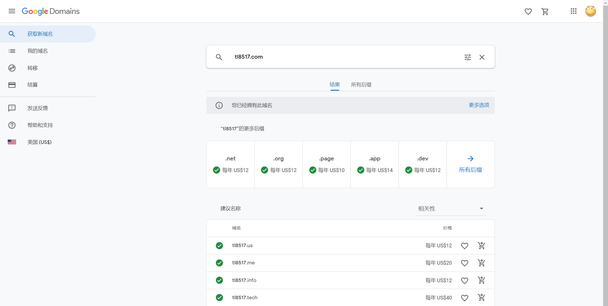
点击我的域名->管理->DNS->自定义资源记录:A记录用来解析服务器的ipv4地址
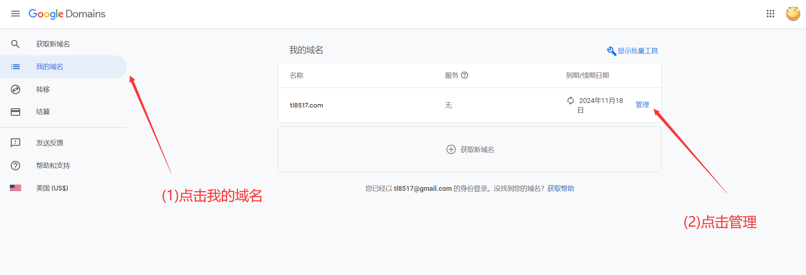
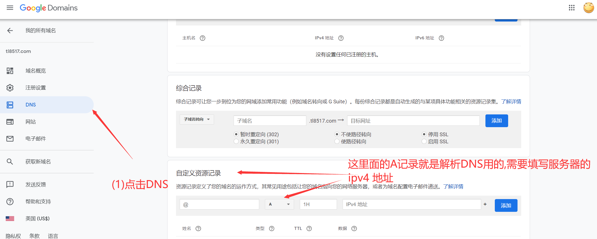
三 搭建vps服务器
我为什么使用过国外的服务器?
在中国建设自己的网站是需要备案的 , 听说周期挺长的 , 我没试过 . 如果你自己在家搭设服务器 , 拨号获得的IP地址必须为公网地址 , 还需要运营商解除对80,443端口封禁 . 封禁端口就是防止自建网站 .
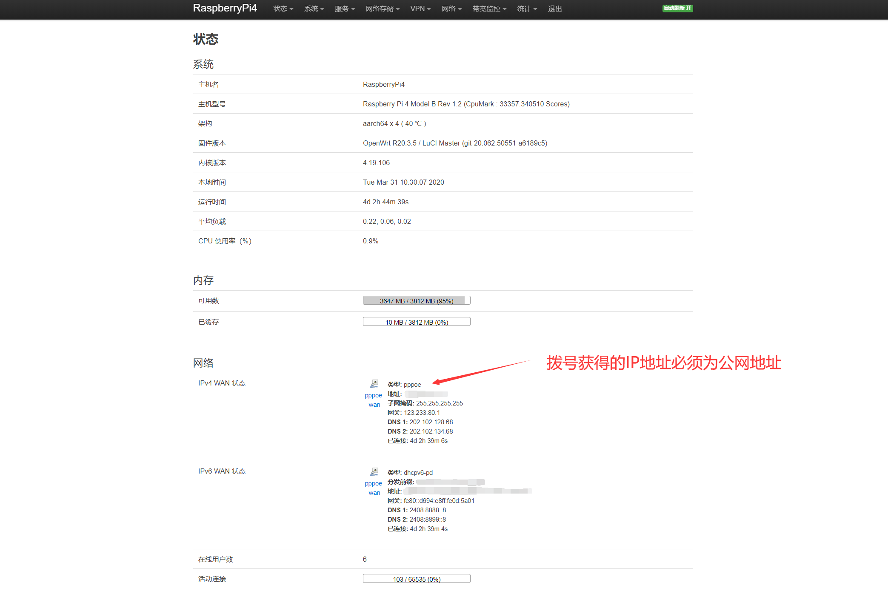
这是我用raspberrypi4刷openwrt编译的软路由界面
家庭宽带建设网站(稍微提一下,不推荐)
家庭宽带获得的公网IP是临时的,有的是隔段时间变化一次,有的是重启路由换一次.申请固定IP价格不菲 .
80端口就是http的默认访问端口:你在浏览器输入的网址 http://tl8517.com其实完整的是http://tl8517.com:80形式的,只是浏览器默认添加,不显示而已.
443端口就是https的默认访问端口:你在浏览器输入的网址 https://tl8517.com其实完整的是https://tl8517.com:443形式的,只是浏览器默认添加,不显示.
对于上面这几种问题 , 可以使用DDNS(动态DNS)和frp(内网穿透),端口转发解决 .对于我的网站不适合,这种方法在申请google adsense时 网站ip地址会被识别成内网的ip,导致申请失败.
现在互联网都是主推云服务器,提供商也是很多的(阿里云,Google云等等) . 费用相对便宜,有各种管理功能.
我使用的是google cloud . 首次使用会有300美金的试用金 , 也有教程可以重复申请(其实就是注册不同账户google账户,然后转移管理账户而已)
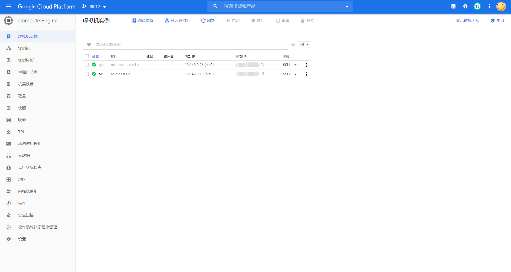
建了两个vps一个网站服务器一个科学上网用
用google创建vps服务器:
(1)创建虚拟机实例
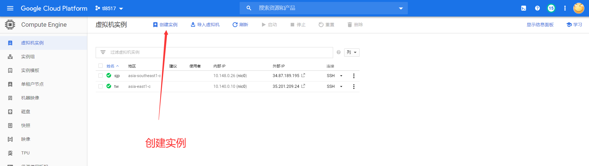
(2)配置创建服务器系统
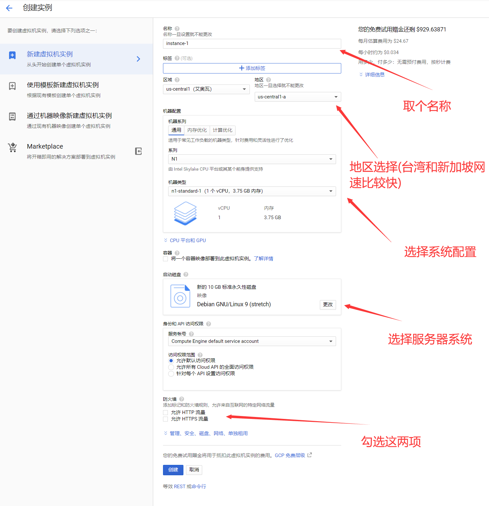
(3)固定外网IP地址:临时IP调整成静态IP
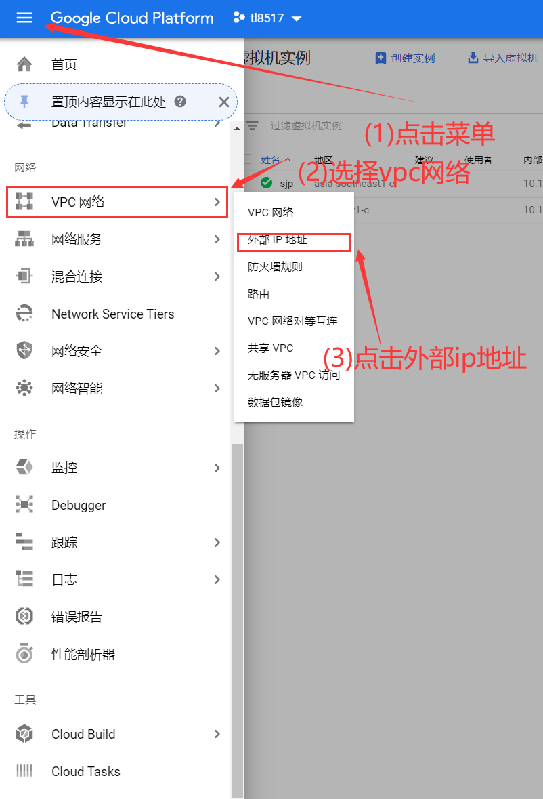
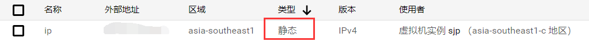
(4)同样的菜单 , 选择防火墙规则
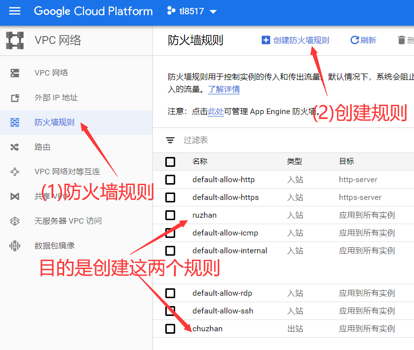
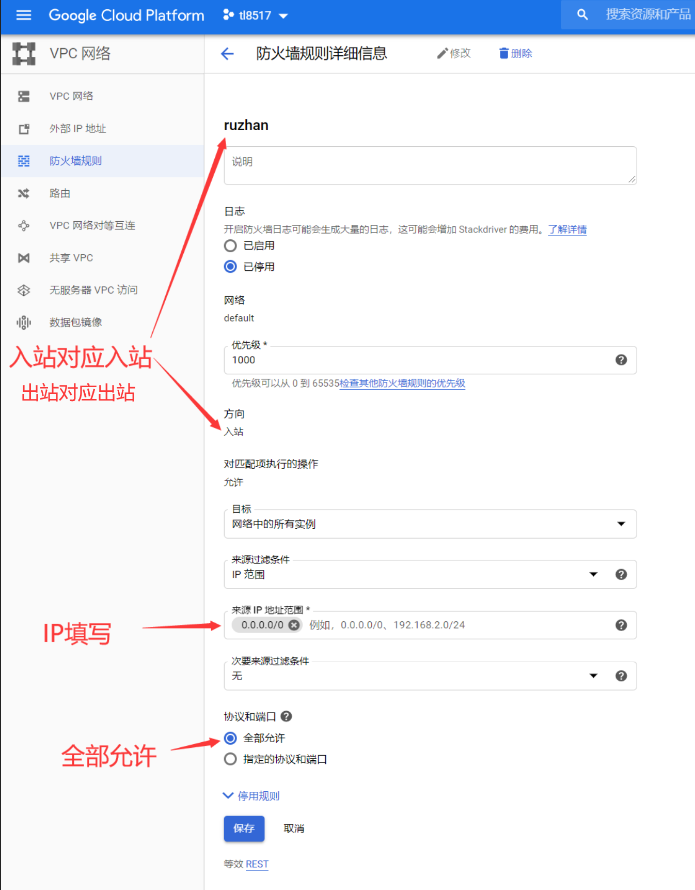
(5)服务器建立完成,下一步就是部署webserver
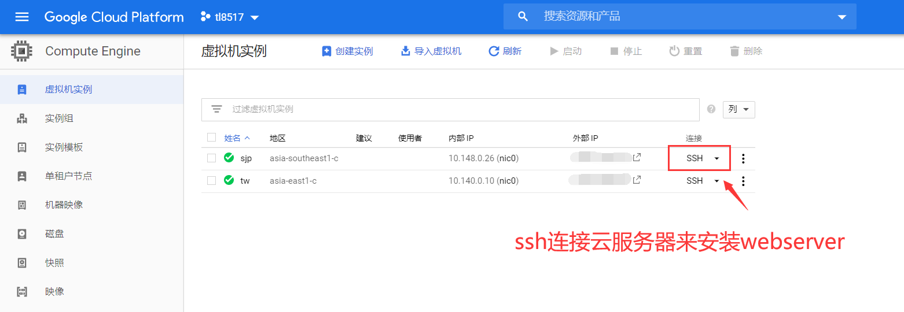
后面的安装命令请查看这篇文章
ubuntu搭建lamp(Apache+PHP+Mysql环境)
ssh控制提供了上传下载文件的功能 , 不用在较劲脑汁的安装其他工具 . 至于传输速度,也就那样啦 .
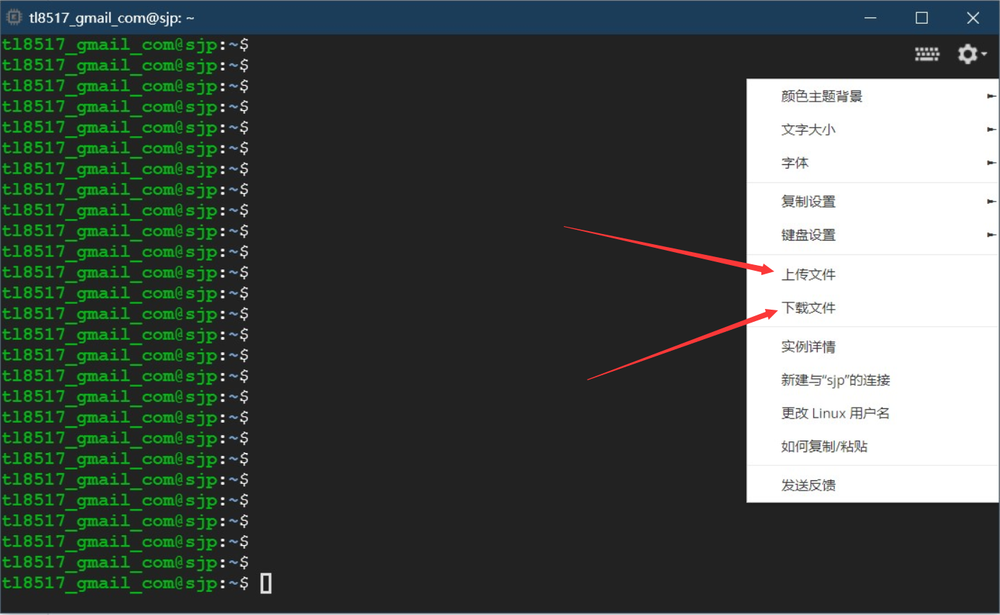